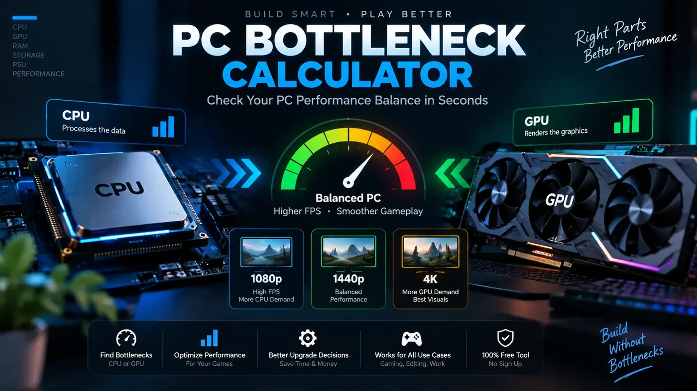

PC Bottleneck Guides & Practical Hardware Articles
Independent, educational guides about PC bottlenecks, CPU and GPU performance, RAM, temperatures, storage, PC usage and upgrade planning. Each guide is written to help you understand what your computer is doing before you spend money on hardware.

CPU vs GPU Bottleneck: Which Is Limiting You?
Compare CPU and GPU bottleneck signs, usage patterns and what to upgrade.
Read the guide →Bottleneck Checker: Test Your PC
A five-step bottleneck test that combines a calculator with real monitoring.
Read the guide →Fix a PC Bottleneck and Boost FPS
Fixes in the right order, from free settings to targeted upgrades.
Read the guide →Types of PC Bottlenecks
CPU, GPU, RAM, storage, bandwidth, motherboard, power and cooling limits.
Read the guide →How to Avoid a PC Bottleneck
Plan a balanced PC build with compatible parts before you buy.
Read the guide →What Is a Good Bottleneck Percentage?
Is 10%, 20% or 30% bad? Learn how to read calculator results.
Read the guide →Thermal Throttling vs CPU Bottleneck
Tell heat problems from CPU limits and learn safe gaming temperatures.
Read the guide →Does a PSU Cause a Bottleneck?
What an undersized power supply really does and how much wattage you need.
Read the guide →SSD vs HDD vs NVMe for Gaming
Compare load times, stutter and FPS to see if storage is slowing your PC.
Read the guide →How Much VRAM Do You Need?
8GB, 12GB or 16GB? Match graphics memory to 1080p, 1440p and 4K.
Read the guide →What Causes PC Stuttering?
Learn how to fix PC stuttering by diagnosing 1% lows and frame pacing issues.
Read the guide →How to Fix Low GPU Usage While Gaming
Find out why your GPU sits at 40 to 60% and how to fix FPS caps, CPU limits and settings.
Read the guide →How to Fix 100% CPU Usage
Learn how to lower CPU usage and stop stuttering without buying a new processor.
Read the guide →Resolution Bottlenecks
Understand how 1080p, 1440p, and 4K change your CPU and GPU bottleneck.
Read the guide →Is 16GB RAM Enough?
Find out if 16GB of RAM is causing a bottleneck in modern games.
Read the guide →DLSS and Frame Gen
Learn how upscaling and Frame Gen impact your CPU and GPU bottleneck.
Read the guide →PC Upgrade Checklist
Use this complete hardware checklist to determine what part needs an upgrade.
Read the guide →How to Check a PC Bottleneck
CPU and GPU utilization, frame time, RAM, temperatures and controlled tests.
Read the guide →CPU vs GPU Bottleneck
Understand how to tell which component is limiting your PC.
Read the guide →How to Choose a Gaming CPU
Cores, cache, clock speed, platform cost and GPU pairing explained.
Read the guide →GPU Bottleneck Guide
GPU usage, VRAM, resolution, ray tracing and graphics settings.
Read the guide →RAM and PC Bottlenecks
Learn how RAM capacity and speed affect gaming performance.
Read the guide →How to Fix a PC Bottleneck
Practical upgrade and optimization solutions to reduce bottlenecks.
Read the guide →How to use these guides
Start with the calculator when you want a quick system-level estimate. Use the guides when you want to understand the reasoning behind a result. For an important purchase, combine both with current manufacturer specifications and independent benchmark data for the exact games or applications you use.
Topics covered
Our PC performance content covers CPU bottlenecks, GPU bottlenecks, gaming CPU selection, RAM capacity, GPU utilization, frame time, thermals, storage, power headroom and Windows resource monitoring. The goal is practical troubleshooting rather than a single universal percentage.